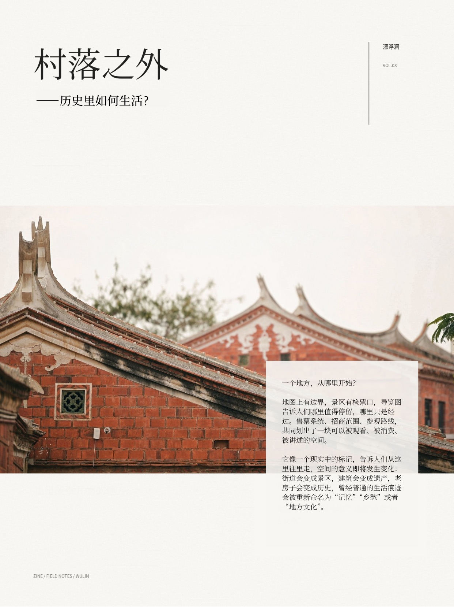
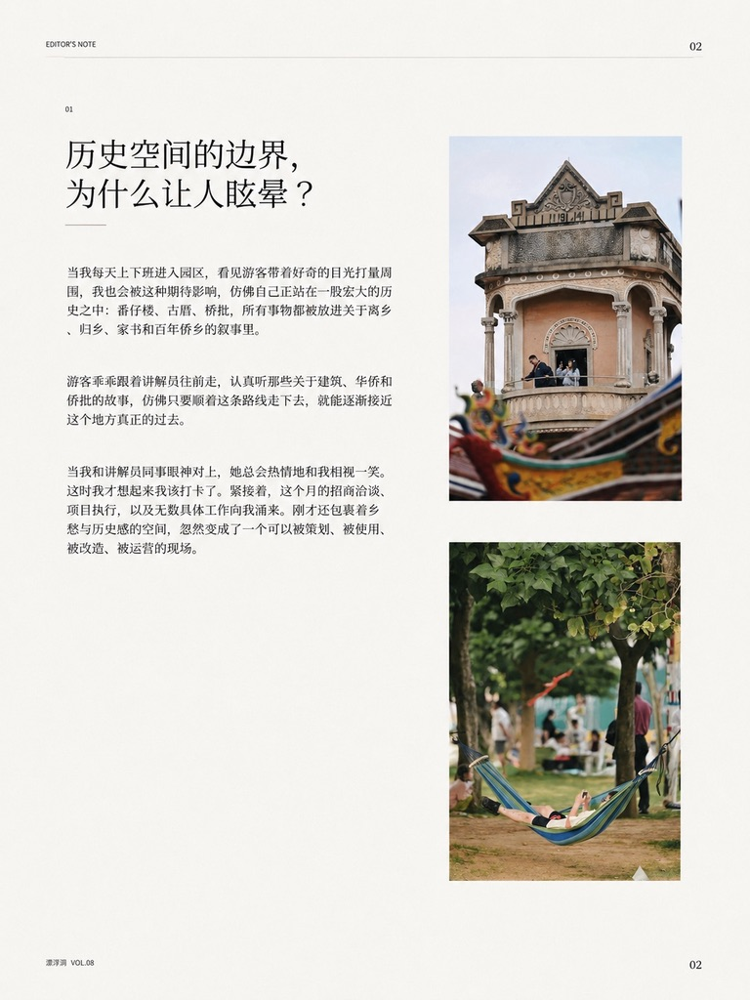
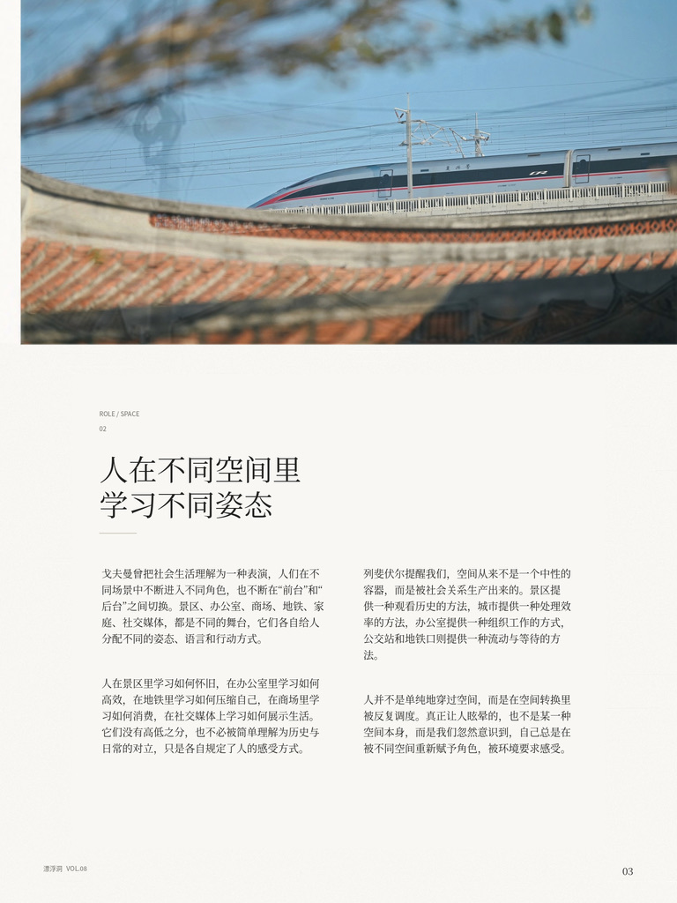
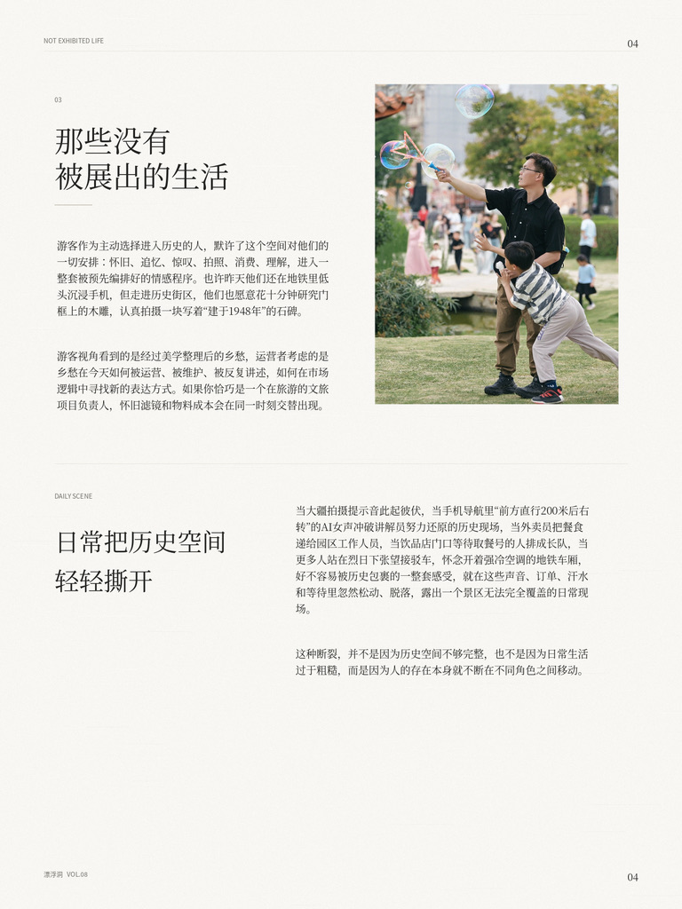
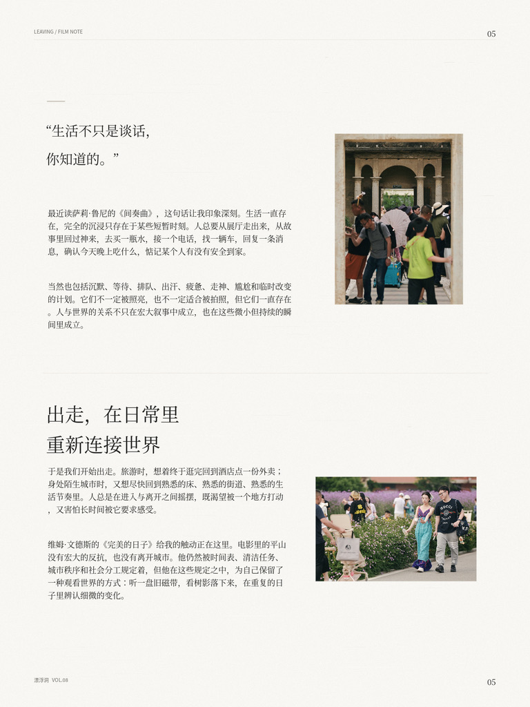

村落之外
一个地方，从哪里开始？
地图上有边界，景区有检票口，导览图告诉人们哪里值得停留，哪里只是经过。售票系统、招商范围、参观路线，共同划出了一块可以被观看、被消费、被讲述的空间。它像一个现实中的标记，告诉人们从这里往里走，空间的意义即将发生变化：街道会变成景区，建筑会变成遗产，老房子会变成历史，曾经普通的生活痕迹会被重新命名为"记忆""乡愁"或者"地方文化"。
但是，历史空间的边界有时会让人产生一种轻微的眩晕感。

当我意识到这一点，是我每天上下班进入园区，看见游客带着好奇的目光打量周围，我也会被这种期待影响，仿佛自己正站在一股宏大的历史之中：番仔楼、古厝、侨批，所有事物都被放进一个关于离乡、归乡、家书和百年侨乡的叙事里。游客乖乖跟着讲解员往前走，认真听那些关于建筑、华侨和侨批的故事，仿佛只要顺着这条路线走下去，就能逐渐接近这个地方真正的过去。当我和讲解员同事眼神对上，她总会热情地和我相视一笑，这时我才想起来我该打卡了，紧接着，这个月的招商洽谈、项目执行，以及无数具体工作向我涌来，刚才还包裹着乡愁与历史感的空间，忽然变成了一个可以被策划、被使用、被改造、被运营的现场。
戈夫曼曾把社会生活理解为一种表演，人们在不同场景中不断进入不同角色，也不断在"前台"和"后台"之间切换。景区、办公室、商场、地铁、家庭、社交媒体，都是不同的舞台，它们各自给人分配不同的姿态、语言和行动方式。人在景区里学习如何怀旧，在办公室里学习如何高效，在地铁里学习如何压缩自己，在商场里学习如何消费，在社交媒体上学习如何展示生活。它们没有高低之分，也不必被简单理解为历史与日常的对立，只是各自规定了人的感受方式，并在空间转换处把人推向不同的观看姿态。
这种感受方式并不完全来自个人的自由意志，也不完全来自外部空间的强制塑造，而是发生在二者交会的地方。列斐伏尔提醒我们，空间从来不是一个中性的容器，而是被社会关系生产出来的。一个地方之所以成为景区、办公区、商业街、交通节点或文化空间，并不是因为它天然如此，而是因为规划、制度、资本、叙事、消费、劳动和日常实践不断把它塑造成某种可以被观看、被使用、被管理的空间。景区提供一种观看历史的方法，城市提供一种处理效率的方法，办公室提供一种组织工作的方式，公交站和地铁口则提供一种流动与等待的方法。人当然可以选择如何观看一个地方，但这种选择从来不是在空白中发生的，因为空间已经提前布置好了它希望人如何行走、停留、消费、理解和离开。于是，人并不是单纯地穿过空间，而是在空间转换里被反复调度；真正让人眩晕的，也不是某一种空间本身，而是我们忽然意识到，自己总是在被不同空间重新赋予角色，被环境要求感受。
在各种角色和身份的切换中，我常常容易感到断裂，甚至陷入一种轻微的眩晕。
那些没有被展出的生活


游客作为主动选择进入历史的人，默许了这个空间对他们的一切安排——怀旧、追忆、惊叹、拍照、消费、理解，进入一整套被预先编排好的情感程序。也许昨天他们还在地铁里低头沉浸手机，但走进历史街区，他们也愿意花十分钟研究门框上的木雕，会认真拍摄一块写着"建于1948年"的石碑。
游客视角看到的是经过美学整理后的乡愁，运营者考虑的是乡愁在今天应该如何被运营、被维护、被反复讲述，如何在市场逻辑中寻找新的表达方式。如果你恰巧是一个在旅游的文旅项目负责人，你的大脑就自觉地不断在两套语言之间转译，以抽离的视角看别人的叙事逻辑，怀旧滤镜和物料成本在同一时刻交替出现。
当大疆拍摄提示音此起彼伏，当手机导航里"前方直行200米后右转"的AI女声冲破了讲解员努力还原的历史现场，当全副武装的外卖员把餐食递给园区工作人员，当饮品店门口等待取餐号的人排成长队，当更多人站在烈日下张望接驳车，怀念开着强冷空调的地铁车厢，好不容易被历史包裹的一整套感受，就在这些声音、订单、汗水和等待里忽然松动、脱落，露出一个景区无法完全覆盖的日常现场。
这种断裂，并不是因为历史空间不够完整，也不是因为日常生活过于粗糙，而是因为人的存在本身就不断在不同角色之间移动。
——萨莉·鲁尼《间奏曲》
最近读萨莉·鲁尼的《间奏曲》，里面有一句话让我印象深刻。生活一直存在，完全的沉浸只存在于某些短暂时刻，生活不可能一直停留在观点、意义和感动的状态里。人总要从展厅走出来，从故事里回过神来，去买一瓶水，接一个电话，找一辆车，回复一条消息，确认今天晚上吃什么，惦记某个人有没有安全到家。
当然也包括沉默、等待、排队、出汗、疲惫、走神、尴尬和临时改变的计划。它不一定被照亮，也不一定适合被拍照，但它一直存在。我们习惯把某一种时刻抬高为"意义的发生"，人与世界的关系并不只在宏大叙事中成立，也不只在被讲述的事件中成立，它同样发生在无数微小但持续的瞬间里，奶茶店、外卖、导航、手机消息，它们仍旧是今天的人维持生活、处理关系、确认彼此相连的方式。它们彼此交替，在不断流动中生成人的经验。我们所经历的，并不完全是从一个空间跳到另一个空间，而是在这些时刻之间不断被重新安置。
出走，在日常里
重新连接世界

于是我们开始出走。旅游时，想着终于逛完回到酒店点一份外卖；身处陌生城市时，又想尽快回家，回到熟悉的床、熟悉的街道、熟悉的生活节奏里。人总是在进入与离开之间摇摆，既渴望被一个地方打动，又害怕长时间被它要求感受；既想进入某种氛围，又想随时退回到不需要解释自己的日常。对我而言，这种出走常常发生在下班以后。工作时间里，景区是项目、流程、指标和需要处理的问题；可一旦从工作状态里退出来，梧林又慢慢变成我的"附近"，我开始像一个普通人那样逛起来，沿着路走，看墙面、树影、游客和店铺，看那些白天被我当作工作对象的建筑重新退回到空间本身，甚至开始寻找一点只属于自己的感受。
想出走，也想逃离。想从被安排好的路线里逃出去，从被命名的历史里逃出去。但是无论在哪个社会场景下，都不断被要求以某种方式经历：旅游时要感受文化，工作时要体现价值，社交时要维护关系，消费时要懂得品味，甚至休息时也要把生活整理成可以被展示的内容。我们拥有越来越多图像，从一种空间进入另一种空间，从一种秩序进入另一种秩序，从消费和观看的秩序里逃出去，再进入被效率、消费和信息流组织起来的日常。
如何与世界产生连接，又不被世界完全吞没；如何保持必要的边界，又不把自己封闭成孤岛？
维姆·文德斯的《完美的日子》给我的触动正在这里。电影里的清洁工平山每天重复相似的生活：起床、洗漱、开车、打扫东京公共厕所、吃饭、听磁带、看树影、拍照、回家、睡觉。这个人物没有宏大的反抗，也没有离开城市，更没有真正逃到世界之外。他仍然在公共系统里工作，仍然被时间表、清洁任务、城市秩序和社会分工规定着，但他在这些规定之中，为自己保留了一种观看世界的方式：听一盘旧磁带，看树影落下来，给阳光中的枝叶拍照，在午饭时短暂地抬头，在重复的日子里辨认细微的变化。他的孤独之所以感人，不在于他隔绝了世界，而在于他用自己的方式重新选择了与世界连接的距离。世界没有变得更自由，他的目光也没有完全被世界收编。
当我把感受还给某些具体的东西。认真听完一段关于侨批的讲解，在池塘边看水中的倒影，在阴雨绵绵的日子里，看云层深浅不同的灰色，看天空像一块被水洗过的布，慢慢压低到屋檐上；是跟着游客一起伸手触摸泥塑，感受掌心里粗粝、潮湿、并不光滑的质地；也是下班后从一条熟悉的路慢慢走过去，听见远处小孩的笑声、傍晚饭点从某个后厨飘出来的油烟。这些细小的日常并不宏大，却让我重新确认：生活不是只有被安排和被调度，生活也可以在某个不被催促的瞬间，重新回到自己手里。
村落之外，
让空间继续流动

我走出那个近乎透明的"玻璃容器"之后，看见开阔的立交桥、天桥、公交车站和电线杆，车流从高处滑过去，人们在站牌下等车，日常生活以一种更直接、更粗粝的方式重新展开。那一刻，我看见立交桥层层叠起，桥身爬满绿藤，像一座被植物慢慢接管的城市画廊。桥洞之间漏下来的光斑，落在地面、叶片和等车人的脚边，成了这座城市在通行与秩序之外，偶然展出的一点日常。梧林不再是一整套被讲述、被命名、被观看的历史空间，而像城市里一座可以被经过的公园；它重新靠近了生活，我也直面它和城市、交通、通勤、等待、天气、噪音共同构成的现实。
在一次次走进和走出之间，重新塑造人与空间的边界。一个地方，从来不是从入口开始的。它开始于我们决定如何观看它，也在我们意识到这种观看并非天然时，第一次显露出真正的边界。边界不是为了把人困住，而是提醒我们：自己正在以某种方式进入世界，也仍然可以在某个瞬间，换一种方式重新看见它。